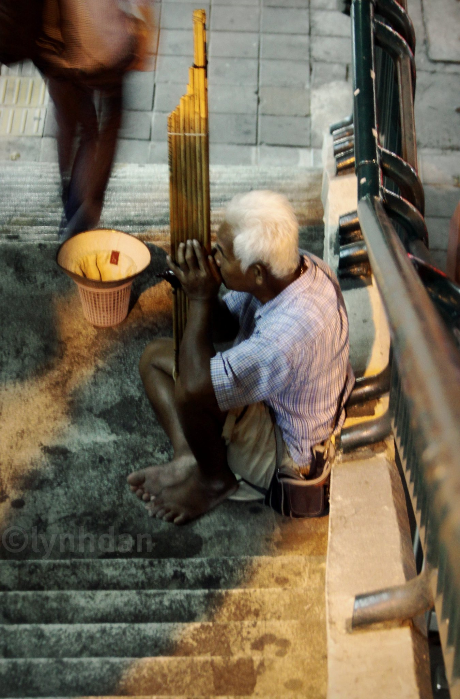

เพลงซอพม่า
| _ | ล | ซ | ฟ | ซ | ล | ซ | ด | _ | _ | ซ | ด | _ | ท | ล | ซ | _ | ล | ซ | ฟ | ซ | ล | ซ | ด | _ | _ | ซ | ด | _ | ท | ล | ซ |
| _ | ซ | _ | ซ | ฟ | ล | ซ | ฟ | ซ | ร | ฟ | ซ | ฟ | ร | ด | ร | ด | ร | ฟ | ซ | ฟ | ร | ฟ | ด | ร | ด | ท | ซ | ท | ร | ด | ท |
| ฟ | ซ | ฟ | ท | _ | _ | ด | ร | ฟ | ซ | ฟ | ร | ฟ | ร | ด | ท | _ | ล | ซ | ฟ | _ | _ | ซ | ล | _ | ซ | _ | ด | _ | ท | ล | ซ |
| _ | ล | ซ | ฟ | ซ | ล | ซ | ด | _ | _ | ซ | ด | ท | ล | ฟ | ซ | _ | ล | ซ | ฟ | ซ | ล | ซ | ด | ร | ด | ซ | ด | ท | ล | ฟ | ซ |
| _ | ซ | _ | ซ | ด | ล | ซ | ฟ | ด | ร | ฟ | ซ | ล | ซ | ฟ | ร | _ | _ | _ | _ | ฟ | ล | ซ | ฟ | ด | ร | ฟ | ซ | ฟ | ร | ด | ร |
| _ | _ | ฟ | ซ | ล | ซ | ฟ | ด | ร | ด | ท | ซ | ท | ร | ด | ท | ล | ซ | ฟ | ซ | ล | ซ | ด | ร | ฟ | ซ | ฟ | ร | ฟ | ร | ด | ท |
| _ | ล | ซ | ฟ | _ | _ | ซ | ล | ซ | ฟ | ซ | ด | _ | ท | ล | ซ |